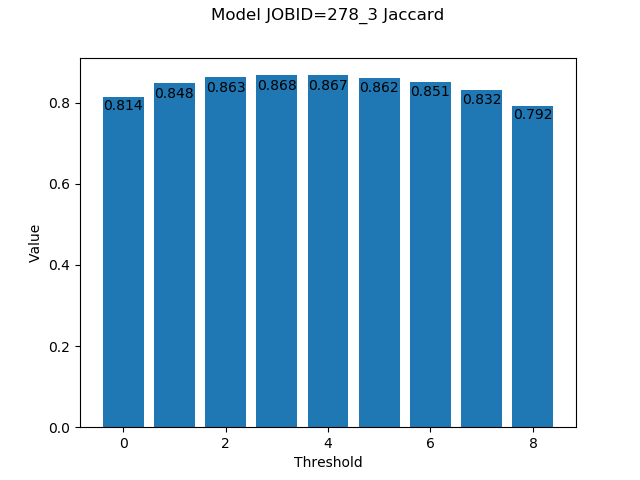

Util¶
-
utils.util.limit_threads(threads_number='1')[source]¶ Limits the number of threads for a python process.
- Parameters
threads_number (
int, optional) – Number of threads.
-
utils.util.set_seed(seedValue=42, determinism=False)[source]¶ Sets the seed on multiple python modules to obtain results as reproducible as possible.
- Parameters
seedValue (
int, optional) – Seed value.determinism (
bool, optional) – To force determism.
-
utils.util.create_plots(results, job_id, chartOutDir, metric='jaccard_index')[source]¶ Create loss and main metric plots with the given results.
- Parameters
results (
Keras History object) – Record of training loss values and metrics values at successive epochs. History object is returned by Keras fit() method.job_id (
str) – Jod identifier.chartOutDir (
str) – Path where the charts will be stored into.metric (
str, optional) – Metric used.
Examples

Jaccard index values on each epoch¶
{kind=link}
-
utils.util.threshold_plots(preds_test, Y_test, det_eval_ge_path, det_eval_path, det_bin, n_dig, job_id, job_file, char_dir, r_val=0.5)[source]¶ Create a plot with the different metric values binarizing the prediction with different thresholds, from
0.1to0.9.- Parameters
preds_test (
4D Numpy array) – Predictions made by the model. E.g.(num_of_images, x, y, channels).Y_test (
4D Numpy array) – Ground truth of the data. E.g.(num_of_images, x, y, channels).det_eval_ge_path (
str) – Path where the ground truth is stored for the DET calculation.det_eval_path (
str) – Path where the evaluation of the metric will be done.det_bin (
str) – Path to the DET binary.n_dig (
int) – The number of digits used for encoding temporal indices (e.g.3). Used by the DET calculation binary.job_id (
str) – Id of the job.job_file (
str) – Id and run number of the job.char_dir (
str) – Path to store the charts generated.r_val (
float, optional) – Threshold values to return.
- Returns
t_jac (
float) – Value of the Jaccard index when the threshold isr_val.t_voc (
float) – Value of VOC when the threshold isr_val.t_det (
float) – Value of DET when the threshold isr_val.
Examples
jac, voc, det = threshold_plots( preds_test, Y_test, det_eval_ge_path, det_eval_path, det_bin, n_dig, args.job_id, '278_3', char_dir)
Will generate 3 charts, one per each metric: IoU, VOC and DET. In the x axis represents the 9 different thresholds applied, that is:
0.1, 0.2, 0.3, ..., 0.9. The y axis is the value of the metric in each chart. For instance, the Jaccard/IoU chart will look like this:In this example, the best value,
0.868, is obtained with a threshold of0.4.
{kind=link}
-
utils.util.array_to_img(x, data_format='channels_last', scale=True, dtype='float32')[source]¶ Converts a 3D Numpy array to a PIL Image instance.
As the Keras array_to_img function in:
-
utils.util.img_to_array(img, data_format='channels_last', dtype='float32')[source]¶ Converts a PIL Image instance to a Numpy array.
It’s a copy of the function keras_preprocessing/image/utils.py.
-
utils.util.save_tif(X=None, data_dir=None, filenames=None, verbose=True)[source]¶ Save images in the given directory.
- Parameters
X (
4D/5D numpy array, optional) – Data to save as images. The first dimension must be the number of images. E.g.(num_of_images, x, y, channels)or(num_of_images, z, x, y, channels).data_dir (
str, optional) – Path to store X images.filenames (
List, optional) – Filenames that should be used when saving each image.
-
utils.util.save_img(X=None, data_dir=None, Y=None, mask_dir=None, scale_mask=True, prefix='', extension='.png', filenames=None)[source]¶ Save images in the given directory.
- Parameters
X (
4D numpy array, optional) – Data to save as images. The first dimension must be the number of images. E.g.(num_of_images, x, y, channels).data_dir (
str, optional) – Path to store X images.Y (
4D numpy array, optional) – Masks to save as images. The first dimension must be the number of images. E.g.(num_of_images, x, y, channels).scale_mask (
bool, optional) – To allow mask be multiplied by 255.mask_dir (
str, optional) – Path to store Y images.prefix (
str, optional) – Path to store generated charts.filenames (
list, optional) – Filenames that should be used when saving each image. If any provided each image should be named as:prefix + "_x_" + image_number + extensionwhenX.ndim < 4andprefix + "_x_" + image_number + "_" + slice_numger + extensionotherwise. E.g.prefix_x_000.pngwhenX.ndim < 4orprefix_x_000_000.pngwhenX.ndim >= 4. The same applies toY.
-
utils.util.make_weight_map(label, binary=True, w0=10, sigma=5)[source]¶ Generates a weight map in order to make the U-Net learn better the borders of cells and distinguish individual cells that are tightly packed. These weight maps follow the methodology of the original U-Net paper.
Based on unet/py_files/helpers.py.
- Parameters
label (
3D numpy array) – Corresponds to a label image. E.g.(x, y, channels).binary (
bool, optional) – Corresponds to whether or not the labels are binary.w0 (
float, optional) – Controls for the importance of separating tightly associated entities.sigma (
int, optional) – Represents the standard deviation of the Gaussian used for the weight map.
Example
Notice that weight has been defined where the objects are almost touching each other.

-
utils.util.do_save_wm(labels, path, binary=True, w0=10, sigma=5)[source]¶ Retrieves the label images, applies the weight-map algorithm and save the weight maps in a folder. Uses internally
util.make_weight_map().Based on deepimagejunet/py_files/helpers.py.
- Parameters
labels (
4D numpy array) – Corresponds to given label images. E.g.(num_of_images, x, y, channels).path (
str) – Refers to the path where the weight maps should be saved.binary (
bool, optional) – Corresponds to whether or not the labels are binary.w0 (
float, optional) – Controls for the importance of separating tightly associated entities.sigma (
int, optional) – Represents the standard deviation of the Gaussian used for the weight map.
-
utils.util.foreground_percentage(mask, class_tag)[source]¶ Percentage of pixels that corresponds to the class in the given image.
- Parameters
mask (
2D Numpy array) – Image mask to analize.class_tag (
int) – Class to find in the image.
- Returns
x – Percentage of pixels that corresponds to the class. Value between
0and1.- Return type
float
-
utils.util.divide_images_on_classes(data, data_mask, out_dir, num_classes=2, th=0.8)[source]¶ Create a folder for each class where the images that have more pixels labeled as the class (in percentage) than the given threshold will be stored.
- Parameters
data (
4D numpy array) – Data to save as images. The first dimension must be the number of images. E. g.``(num_of_images, x, y, channels)``.data_mask (
4D numpy array) – Data mask to save as images. The first dimension must be the number of images. E. g.(num_of_images, x, y, channels).out_dir (
str) – Path to save the images.num_classes (
int, optional) – Number of classes.th (
float, optional) – Percentage of the pixels that must be labeled as a class to save it inside that class folder.
-
utils.util.save_filters_of_convlayer(model, out_dir, l_num=None, name=None, prefix='', img_per_row=8)[source]¶ Create an image of the filters learned by a convolutional layer. One can identify the layer with
l_numornameargs. If both are passednamewill be prioritized.- Parameters
model (
Keras Model) – Model where the layers are stored.out_dir (
str) – Path where the image will be stored.l_num (
int, optional) – Number of the layer to extract filters from.name (
str, optional) – Name of the layer to extract filters from.prefix (
str, optional) – Prefix to add to the output image name.img_per_row (
int, optional) – Filters per row on the image.
- Raises
ValueError – if
l_numandnamenot provided.
Examples
To save the filters learned by the layer called
conv1one can call the function as followssave_filters_of_convlayer(model, char_dir, name="conv1", prefix="model")
That will save in
out_diran image like this:
-
utils.util.calculate_2D_volume_prob_map(Y, Y_path=None, w_foreground=0.94, w_background=0.06, save_dir=None)[source]¶ Calculate the probability map of the given 2D data.
- Parameters
Y (
4D Numpy array) – Data to calculate the probability map from. E. g.(num_of_images, x, y, channel)Y_path (
str, optional) – Path to load the data from in caseY=None.w_foreground (
float, optional) – Weight of the foreground. This value plusw_backgroundmust be equal1.w_background (
float, optional) – Weight of the background. This value plusw_foregroundmust be equal1.save_dir (
str, optional) – Path to the file where the probability map will be stored.
- Raises
ValueError – if
Ydoes not have 4 dimensions.ValueError – if
w_foreground + w_background > 1.
- Returns
Array – Path where the probability map/s is/are stored if
Y_pathwas given and there are images of different shapes. Otherwise, an array that represents the probability map ofYor all loaded data files fromY_pathwill be returned.- Return type
Stror4D Numpy array
-
utils.util.calculate_3D_volume_prob_map(Y, Y_path=None, w_foreground=0.94, w_background=0.06, save_dir=None)[source]¶ Calculate the probability map of the given 3D data.
- Parameters
Y (
5D Numpy array) – Data to calculate the probability map from. E. g.(num_subvolumes, x, y, z, channel)Y_path (
str, optional) – Path to load the data from in caseY=None.w_foreground (
float, optional) – Weight of the foreground. This value plusw_backgroundmust be equal1.w_background (
float, optional) – Weight of the background. This value plusw_foregroundmust be equal1.save_dir (
str, optional) – Path to the directory where the probability map will be stored.
- Returns
Array – Path where the probability map/s is/are stored if
Y_pathwas given and there are images of different shapes. Otherwise, an array that represents the probability map ofYor all loaded data files fromY_pathwill be returned.- Return type
Stror5D Numpy array- Raises
ValueError – if
Ydoes not have 5 dimensions.ValueError – if
w_foreground + w_background > 1.
-
utils.util.grayscale_2D_image_to_3D(X, Y, th=127)[source]¶ Creates 3D surface from each image in X based on the grayscale of each image.
- Parameters
X (
4D numpy array) – Data that contains the images to create the surfaces from. E.g.(num_of_images, x, y, channels).Y (
4D numpy array) – Data mask of the same shape of X that will be converted into 3D volume, stacking multiple times each image. Useful if you need the two data arrays to be of the same shape. E.g.(num_of_images, x, y, channels).th (
int, optional) – Values to ommit when creating the surfaces. Useful to reduce the amount of data in z to be created and reduce computational time.
- Returns
Array (
5D numpy array) – 3D surface of each image provided. E.g.(num_of_images, z, x, y, channels).Array (
5D numpy array) – 3D stack of each mask provided. E.g.(num_of_images, z, x, y, channels).
-
utils.util.check_masks(path, n_classes=2)[source]¶ Check wheter the data masks have the correct labels inspection a few random images of the given path. If the function gives no error one should assume that the masks are correct.
- Parameters
path (
str) – Path to the data mask.n_classes (
int, optional) – Maximum classes that the masks must contain.
-
utils.util.img_to_onehot_encoding(img, num_classes=2)[source]¶ Converts image given into one-hot encode format.
The opposite function is
onehot_encoding_to_img().- Parameters
img (
Numpy 3D/4D array) – Image. E.g.(x, y, channels)or(x, y, z, channels).num_classes (
int, optional) – Number of classes to distinguish.
- Returns
one_hot_labels – Data one-hot encoded. E.g.
(x, y, num_classes)or(x, y, z, num_classes).- Return type
Numpy 3D/4D array
-
utils.util.onehot_encoding_to_img(encoded_image)[source]¶ Converts one-hot encode image into an image with jus tone channel and all the classes represented by an integer.
The opposite function is
img_to_onehot_encoding().- Parameters
encoded_image (
Numpy 3D/4D array) – Image. E.g.(x, y, channels)or(x, y, z, channels).- Returns
img – Data one-hot encoded. E.g.
(x, y, z, num_classes).- Return type
Numpy 3D/4D array
-
utils.util.load_data_from_dir(data_dir, crop=False, crop_shape=None, overlap=0, 0, padding=0, 0, return_filenames=False)[source]¶ Load data from a directory. If
crop=Falseall the data is suposed to have the same shape.- Parameters
data_dir (
str) – Path to read the data from.crop (
bool, optional) – Crop each image into desired shape pointed bycrop_shape.crop_shape (
Tupleof3 ints, optional) – Shape of the crop to be made. E.g.(x, y, channels).overlap (
Tupleof2 floats, optional) – Amount of minimum overlap on x and y dimensions. The values must be on range[0, 1), that is,0%or99%of overlap. E. g.(x, y).padding (
Tupleof2 ints, optional) – Size of padding to be added on each axis(x, y). E.g.(24, 24).return_filenames (
bool, optional) – Return a list with the loaded filenames. Useful when you need to save them afterwards with the same names as the original ones.
- Returns
data (
4D Numpy arrayorlistof3D Numpy arrays) – Data loaded. E.g.(num_of_images, y, x, channels)if all files have same shape, otherwise a list of(y, x, channels)arrays will be returned.data_shape (
Listoftuples) – Shapes of all 3D images readed. Useful to reconstruct the original images together withcrop_shape.crop_shape (
Listoftuples) – Shape of the loaded 3D images after cropping. Useful to reconstruct the original images together withdata_shape.filenames (
Listofstr, optional) – Loaded filenames.
Examples
# EXAMPLE 1 # Case where we need to load 165 images of shape (1024, 768) data_path = "data/train/x" load_data_from_dir(data_path) # The function will print the shape of the created array. In this example: # *** Loaded data shape is (165, 768, 1024, 1) # Notice height and width swap because of Numpy ndarray terminology # EXAMPLE 2 # Case where we need to load 165 images of shape (1024, 768) but # cropping them into (256, 256, 1) patches data_path = "data/train/x" crop_shape = (256, 256, 1) load_data_from_dir(data_path, crop=True, crop_shape=crop_shape) # The function will print the shape of the created array. In this example: # *** Loaded data shape is (1980, 256, 256, 1)
-
utils.util.load_ct_data_from_dir(data_dir, shape=None)[source]¶ Load CT data from a directory.
- Parameters
data_dir (
str) – Path to read the data from.shape (
3D int tuple, optional) – Shape of the data to load. If is not provided the shape is calculated automatically looping over all data files and it will be the maximum value found per axis. So, given the value the process should be faster. E.g.(x, y, channels).
- Returns
data – Data loaded. E.g.
(num_of_images, y, x, channels).- Return type
4D Numpy array
Examples
# EXAMPLE 1 # Case where we need to load 165 images of shape (1024, 768) data_path = "data/train/x" data_shape = (1024, 768, 1) load_data_from_dir(data_path, data_shape) # The function will print list's first position array's shape. In this example: # *** Loaded data[0] shape is (165, 768, 1024, 1) # Notice height and width swap because of Numpy ndarray terminology
-
utils.util.load_3d_images_from_dir(data_dir, crop=False, crop_shape=None, crop_verb=False, overlap=0, 0, 0, padding=0, 0, 0, median_padding=False, return_filenames=False)[source]¶ Load data from a directory.
- Parameters
data_dir (
str) – Path to read the data from.crop (
bool, optional) – Crop each 3D image when readed.crop_shape (
Tupleof4 ints, optional) – Shape of the subvolumes to create when cropping. E.g.(x, y, z, channels).crop_verb (
bool, optional) – Wheter to use verbose mode on crop.overlap (
Tupleof3 floats, optional) – Amount of minimum overlap on x, y and z dimensions. The values must be on range[0, 1), that is,0%or99%of overlap. E.g.(x, y, z).padding (
Tupleof3 ints, optional) – Size of padding to be added on each axis(x, y, z). E.g.(24, 24, 24).median_padding (
bool, optional) – IfTruethe padding value is the median value. IfFalse, the added values are zeroes.return_filenames (
bool, optional) – Return a list with the loaded filenames. Useful when you need to save them afterwards with the same names as the original ones.
- Returns
data (
5D Numpy arrayorlistof4D Numpy arrays) – Data loaded. E.g.(num_of_images, x, y, z, channels)if all files have same shape, otherwise a list of(1, x, y, z, channels)arrays will be returned.data_shape (
Listoftuples) – Shapes of all 3D images readed. Useful to reconstruct the original images together withcrop_shape.crop_shape (
Listoftuples) – Shape of the loaded 3D images after cropping. Useful to reconstruct the original images together withdata_shape.filenames (
Listofstr, optional) – Loaded filenames.
Examples
# EXAMPLE 1 # Case where we need to load 20 images of shape (1024, 1024, 91, 1) data_path = "data/train/x" data = load_data_from_dir(data_path) # The function will print list's first position array's shape. In this example: # *** Loaded data[0] shape is (20, 91, 1024, 1024, 1) # Notice height, width and depth swap as skimage.io imread function # is used to load images # EXAMPLE 2 # Same as example 1 but with unknown shape, cropping them into (256, 256, 40, 1) subvolumes with minimum # overlap and storing filenames. data_path = "data/train/x" X_test, orig_test_img_shapes, crop_test_img_shapes, te_filenames = load_3d_images_from_dir( test_path, crop=True, crop_shape=(256, 256, 40, 1), overlap=(0,0,0), return_filenames=True) # The function will print the shape of the created array which its size is the concatenation in 0 axis of all # subvolumes created for each 3D image in the given path. For example: # *** Loaded data shape is (350, 256, 256, 40, 1) # Notice height, width and depth swap as skimage.io imread function is used to load images.
-
utils.util.labels_into_bcd(data_mask, mode='BCD', fb_mode='outer', save_dir=None)[source]¶ Create an array with 3 channels given semantic or instance segmentation data masks. These 3 channels are: semantic mask, contours and distance map.
- Parameters
data_mask (
5D Numpy array) – Data mask to create the new array from. It is expected to have just one channel. E.g.(10, 1000, 1000, 200, 1)mode (
str, optional) – Operation mode. Possible values:BCandBCD.BCcorresponds to use binary segmentation+contour.BCDstands for binary segmentation+contour+distances.fb_mode (
str, optional) – Mode of the find_boundaries function fromscikit-image. More info in: find_boundaries().save_dir (
str, optional) – Path to store samples of the created array just to debug it is correct.
- Returns
new_mask – 5D array with 3 channels instead of one. E.g.
(10, 1000, 1000, 200, 3)- Return type
5D Numpy array
-
utils.util.check_downsample_division(X, d_levels)[source]¶ Ensures
Xshape is divisible by2timesd_levelsadding padding if necessary.- Parameters
X (
4D Numpy array) – Data to check if its shape. E.g.(10, 1000, 1000, 1).d_levels (
int) – Levels of downsampling by2.
- Returns
X (
4D Numpy array) – Data divisible by 2d_levelstimes.o_shape (
4 int tuple) – Original shape ofX. E.g.(10, 1000, 1000, 1).